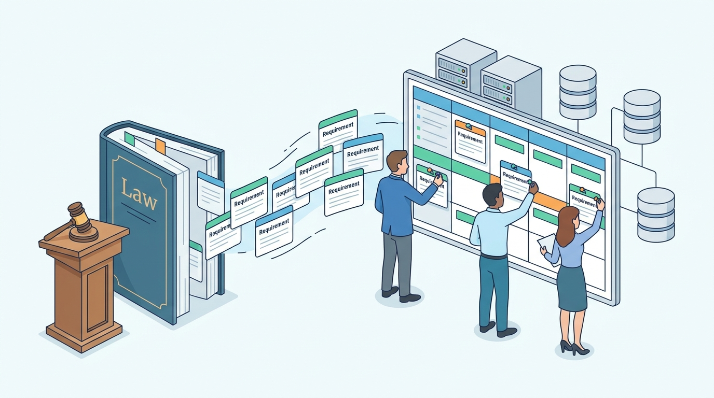

Part VIII — TRUST: Security, Privacy and Regulation
Rules Turned Into Requirements: Consumer, Payment, Invoicing and Platform Regulation
AI-assisted: researched and written with Claude Code and Codex; illustrations generated with Gemini and OpenAI image tools. How this works
